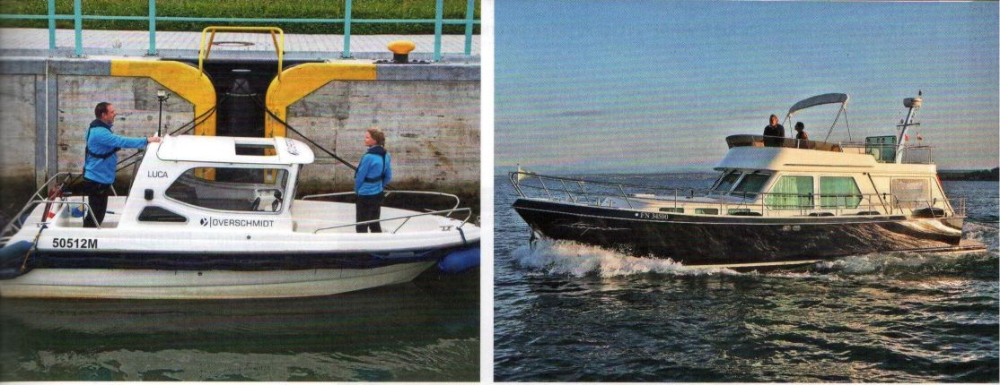

СОДЕРЖАНИЕ
Каталог дополнительных обучающих видео (DE/EN):
- Глава 1: Права для внутренних водных путей
-
- Глава 2: Моторная лодка
-
- Глава 3: Законы судоходства
-
- Глава 4: Правила судоходства
-
- Глава 5: Водное дело
-
- Глава 6: Метеорология
-
- Глава 7: Морские узлы
-
8 УДОСТОВЕРЕНИЕ СУДОВОДИТЕЛЯ СПОРТИВНОГО СУДНА ДЛЯ ВНУТРЕННИХ ВОДНЫХ ПУТЕЙ
10 ПРАВИЛА СУДОХОДСТВА
Видео: категории плавсредств (DE/EN)
29 УЗЛЫ И ТРОСЫ
34 ВСЁ О ЛОДКЕ
40 ДВИГАТЕЛЬ ЛОДКИ

57 УПРАВЛЕНИЕ МОТОРНОЙ ЛОДКОЙ
80 МЕТЕОРОЛОГИЯ
Видео: Метеорология (DE/EN), Видео: Шкала Бофора (DE/EN)
83 ОХРАНА ОКРУЖАЮЩЕЙ СРЕДЫ
84 ТРАНСПОРТИРОВКА ЛОДКИ
87 ОФИЦИАЛЬНЫЙ КАТАЛОГ ВОПРОСОВ: 253 ЭКЗАМЕНАЦИОННЫХ ВОПРОСА С ОТВЕТАМИ
123 КРАТКИЙ МОРСКОЙ СЛОВАРЬ
127 ПРЕДМЕТНЫЙ УКАЗАТЕЛЬ
Назад Вперед